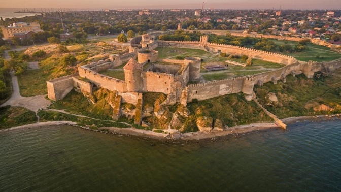
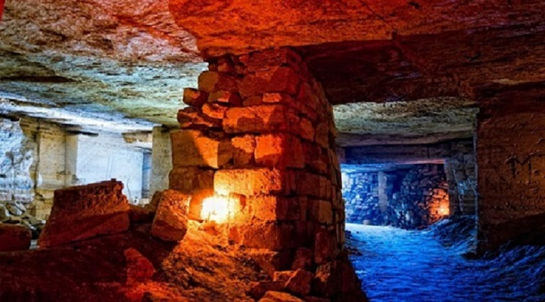

Вступ
У безмежній красі та глибині історії Україна розкриває свою
ідентичність через визначні місця, які стали національними символами
та культурною спадщиною України багата архітектурними пам'ятками,
природними ландшафтами та культурними об'єктами, що мають свою
власну неповторну історію. Вони заповнюють кожен куточок нашої
багатогранної країни.
Дізнаємося про ті неповторні місця, які втілюють красу та дух
України через призму визначних об'єктів. Від Карпатських вершин до
узбережжя Чорного моря — кожне місце розкриває сторінку унікальної
історії нашої батьківщини.
Острів Хортиця
Острів Хортиця — це неперевершена природна та історична перлина, що розташована на річці Дніпро в межах Запорізької області. Острів має загальну площу близько 2360 гектарів та є символом українського козацтва. Він довго служив важливим козацьким центром, був місцем формування та тренування військ запорізьких.
На острові проводилися розкопки, які виявили археологічні скарби, що свідчать про населення території ще з доісторичних часів. Знахідки включають артефакти від доби енеоліту, тобто 5 тис. до н.е. Хортиця має прекрасні природні пейзажі, включаючи ліси та пляжі на березі Дніпра. Це ідеальне місце для прогулянок, велосипедних поїздок та водних видів спорту. Крім того, тут розташований Національний музей історії запорозького козацтва, де можна побачити численні пам'ятки, присвячені козацькому минулому.
Олешківські піски
"Олешківські піски" - це унікальний природний заповідник, друга по площі найбільша піщана пустеля у Європі, що розташована у Херсонській області на півдні України. Ця природна піщана дюна простяглась на площі більше 1600 квадратних кілометрів.
Піски вражають своєю красою і неповторністю ландшафту: безкрайні
відкриті простори засипані піском, які динамічно перетворюються
під впливом вітру, створюючи унікальні пейзажі. Ця територія
відома своєю унікальною флорою і фауною, а також являє собою
важливу зупинку для мігруючих птахів. З 2010 року "Олешківські
піски" офіційно отримали статус національного природного парку,
спрямованого на збереження та підтримку екологічних особливостей
території.
Пустелю, або її краще називати напівпустелею, умовно можна
розділити на 7 частин, які мають свої природні та кліматичні
особливості. "Олешківські піски" приваблюють не лише природною
красою, а й можливістю активного відпочинку на природі та
екскурсій.
Біосферний заповідник "Асканія-Нова" імені Ф.Е. Фальц-Фейна
Асканія-Нова - це державний біосферний заповідник, розташований у Херсонській області на півдні України, займає близько 33 гектарів площі. Унікальне місце, яке зберігає різноманітність природи степової зони та є домом для багатьох видів рослин і тварин.
На території заповідника проживає багато видів диких тварин, таких
як антилопи, зебри, тури, коні та інші види, які роблять це місце
ідеальним для екологічного туризму та спостереження за дикою
природою.
Заповідник пропонує відвідувачам різноманітні екскурсії, які
дозволяють побачити природні багатства та відчути атмосферу цього
унікального місця. "Асканія-Нова" є центром наукових досліджень у
сферах екології, ботаніки та зоології. Тут працюють вчені, які
вивчають природні процеси та розробляють стратегії збереження
біорізноманіття.
Лемурійське озеро
Лемурійське озеро відоме як "рожеве озеро" або херсонське «Мертве море» є одним із природних див Херсонської області, що розташовано біля села Григорівка. При огляді карти для виявлення місцезнаходження рожевого озера помітно, що поруч розташована велика водойма - Сиваш. Їх розділяє тонка смуга суходолу.
Озеро вражає своїм рожевим кольором води, який утворюється завдяки великій кількості специфічних видів водоростей Дуналіелла та бактерій. Це природне явище, тому відтінок може змінюватися в залежності від умов середовища. Не менш важливо, що озеро відноситься до солоних водойм, адже містить велику кількість мінералів та солей. Тому за корисними властивостями і солоністю його часто порівнюють із Мертвим морем в Ізраїлі. Озеро є важливим в екологічному аспекті, як унікальний природний об'єкт.
Аккерманська фортеця
Аккерманська фортеця, також відома як Білгород-Дністровська, розташована в однойменному місті Білгород-Дністровськ (античне місто Тіра) на півдні України.
Її архітектурний стиль поєднує різноманітні елементи та вражаючу систему оборонних стін і веж протяжністю 2.5 кілометри, займає площу майже 9 гектарів. Розташування фортеці на високому пагорбі над Дністровським лиманом давало їй стратегічну перевагу в історичних конфліктах.
Фортеця грала важливу роль в історії регіону, функціонуючи як ключовий об'єкт оборони та адміністративний центр, зокрема під час османського володарювання. Сьогодні вона є туристичною атракцією та об'єктом культурної спадщини України, приваблюючи відвідувачів своєю величчю та красою.
Якщо ви підете на екскурсію, тоді зможете отримати багато інформації про залишені турками скарби, почуєте цікаві історії та перекази щодо фортеці, побачите стародавню зброю. Також вам розповідатимуть про відомих осіб, які відвідували ці місця: Леся Українка, І. Нечуй-Левицький, А. Міцкевич та інші.
Одеські катакомби
Унікальна підземна мережа, розташована під Одесою. Ця система підземних тунелів та проходів виникла під час будівництва міста в XIX-XX столітті. Її використовувались для видобутку будівельних матеріалів, зокрема, каменю-черепашнику. Пізніше, під час війни, катакомби стали притулком для біженців та місцем проведення революційних зборів.
Підземелля приваблюють туристів з усього світу. Екскурсії в підземний світ надають можливість дізнатися більше про історію та архітектуру цього унікального об'єкта та відчути неповторну атмосферу. Однак, не ризикуйте життям і ніколи не спускайтеся в катакомби без супроводу кваліфікованого екскурсовода.
Києво-Печерська Лавра
Києво-Печерська Лавра — це неперевершений комплекс історичних та релігійних пам'яток, розташований у столиці України - Києві. Це місце має величезне історичне та культурне значення. Лавра була заснована в 1051 році монахом Антонієм, ставши центром духовного та культурного життя Київської Русі. Вона є національним символом та пам'яткою Світової спадщини ЮНЕСКО разом із Софіївським собором, важливою для української національної ідентичності.
Однією з найбільш визначних частин Києво-Печерської Лаври є система печер, в яких зберігаються мощі святих. Православна святиня включає в себе численні церкви, монастирські будівлі та інші архітектурні пам'ятки різних епох.
Лавра славиться своїми унікальними іконостасами та фресками, які вражають своєю красою та художньою виразністю. Ця святиня продовжує привертати увагу віруючих, шанувальників історії та мистецтва, а також тих, хто прагне відкрити для себе духовну спадщину України.
Унікальна підземна мережа, розташована під Одесою. Ця система підземних тунелів та проходів виникла під час будівництва міста в XIX-XX столітті. Її використовувались для видобутку будівельних матеріалів, зокрема, каменю-черепашнику. Пізніше, під час війни, катакомби стали притулком для біженців та місцем проведення революційних зборів.